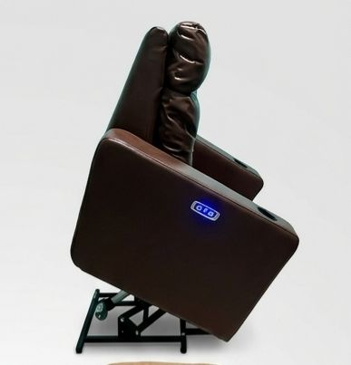
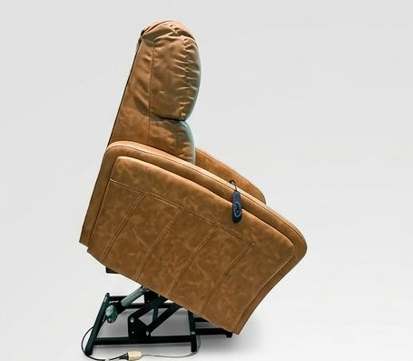
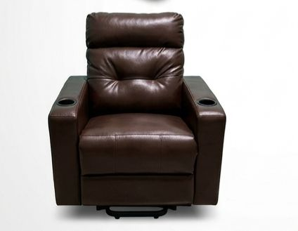
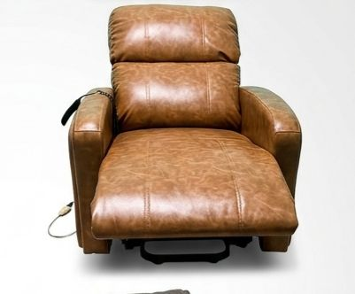

+
Mais conforto após a cirurgia
Posições mais agradáveis para descansar, levantar e permanecer por mais tempo com apoio.
Locação de poltronas reclináveis para recuperação em casa, com atendimento especializado, orientação na escolha e entrega para sua família ter mais tranquilidade.
Falar agora no WhatsApp
Uma poltrona adequada ajuda a transformar o repouso em casa em uma experiência mais acolhedora e organizada.
Posições mais agradáveis para descansar, levantar e permanecer por mais tempo com apoio.
Encosto, braços e assento ajudam a manter o corpo melhor acomodado no dia a dia.
A reclinação facilita o repouso em diferentes fases do pós-operatório, conforme orientação médica.
Opções práticas, confortáveis e pensadas para uso em casa durante a recuperação.
Suporte para entender sua necessidade e indicar a poltrona mais adequada.
Mais comodidade para a família preparar o ambiente antes ou depois da cirurgia.
Consulte sempre seu médico sobre cuidados no pós-operatório. A poltrona pode ser uma aliada para repouso, conforto e rotina em casa.

O processo foi pensado para ser direto, acolhedor e sem complicação para quem está se preparando para uma cirurgia.
Conte a data da cirurgia, cidade de entrega e o tipo de recuperação para receber orientação.
A Medical ajuda você a definir o tempo de locação mais adequado para sua rotina.
A poltrona é entregue para deixar o ambiente pronto para sua chegada e descanso.

As poltronas reclináveis ajudam a criar uma posição de repouso mais confortável, com apoio para o corpo e uso prático no dia a dia.
Consulte disponibilidade e condições pelo WhatsApp. A equipe orienta a melhor opção conforme sua necessidade.
Para os primeiros dias após a cirurgia, quando o conforto e o apoio fazem mais diferença.
Consultar no WhatsAppIndicado para quem precisa de mais tempo de repouso e uma rotina mais tranquila em casa.
Consultar no WhatsAppPara recuperações mais longas, idosos ou casos em que a família quer mais praticidade.
Consultar no WhatsAppNo pós-operatório, a dificuldade para deitar, levantar e encontrar uma posição confortável pode tornar o dia mais pesado. A poltrona certa facilita esses momentos.
O paciente tem um lugar adequado para descansar, assistir TV, se alimentar e passar parte do dia com apoio.
Conforto no cotidianoA reclinação e os braços de apoio ajudam nos movimentos de sentar e levantar, respeitando os limites da recuperação.
Rotina mais práticaA casa fica preparada para receber quem está se recuperando, reduzindo improvisos e preocupações.
Ambiente acolhedorDepois de uma cirurgia, pequenos detalhes fazem diferença. Ter uma poltrona reclinável em casa facilita o descanso, ajuda na rotina da família e traz mais tranquilidade para atravessar esse período com cuidado.
Fale pelo WhatsApp, explique sua necessidade e receba orientação para reservar a poltrona ideal para sua recuperação.
Falar agora no WhatsAppModelos confortáveis, práticos e com acabamento premium para deixar o ambiente de recuperação mais funcional.

Assento amplo, braços acolchoados e reclinação para descanso prolongado.
Estrutura robusta para apoio no repouso e uso prático no ambiente doméstico.
Ideal para quem precisa de mais autonomia e comodidade na recuperação.
Se ainda ficar alguma dúvida, o atendimento pelo WhatsApp ajuda você em poucos minutos.
O ideal é falar com antecedência para consultar disponibilidade e deixar a entrega alinhada com a data da cirurgia.
Os modelos reclináveis oferecem apoio e posições mais confortáveis, facilitando a rotina conforme sua condição e orientação médica.
Ao final da locação, o recolhimento é combinado pelo atendimento para tornar o processo simples para a família.
Chame agora a Medical Poltronas de Aluguel e consulte disponibilidade para Guarulhos, São Paulo, Carangola, Muriaé e região.